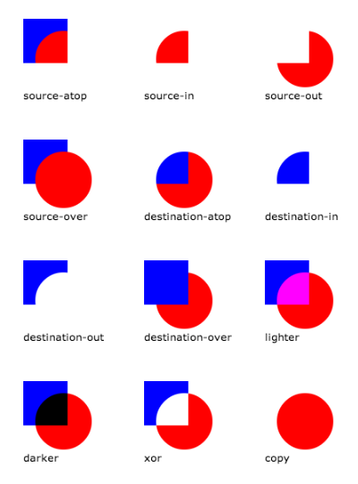

-
HTML5画布(Canvas)元素
>HTML5画布(Canvas)元素
<canvas id="myCanvas" width="500" height="300">
浏览器不支持画布(canvas)时的备案
<canvas id="myCanvas" width="500" height="300">
your browser doesn't support canvas!
</canvas>
2d context
var context = canvas.getContext('2d');
Webgl context (3d)
var context = canvas.getContext('webgl');
-
图形
绘制方形
context.rect(x, y, width, height);
context.fill();
context.stroke();
填充区域
context.fillRect(x, y, width, height);
绘制方形的边框
context.strokeRect(x, y, width, height);
绘制圆形
context.arc(x, y, radius, 0, Math.PI * 2);
context.fill();
context.stroke();
-
风格
填充
context.fillStyle = 'red';
context.fill();
勾勒
context.strokeStyle = 'red';
context.stroke();
线性渐变
var grd = context.createLinearGradient(x1, y1, x2, y2);
grd.addColorStop(0, 'red');
grd.addColorStop(1, 'blue');
context.fillStyle = grd;
context.fill();
径向渐变
var grd = context.createRadialGradient(x1, y1, radius1, x2, y2, radius2);
grd.addColorStop(0, 'red');
grd.addColorStop(1, 'blue');
context.fillStyle = grd;
context.fill();
图案
var imageObj = new Image();
imageObj.onload = function() {
var pattern = context.createPattern(imageObj, 'repeat');
context.fillStyle = pattern;
context.fill();
};
imageObj.src = 'path/to/my/image.jpg';
交点
context.lineJoin = 'miter|round|bevel';
线头
context.lineCap = 'butt|round|square';
阴影
context.shadowColor = 'black';
context.shadowBlur = 20;
context.shadowOffsetX = 10;
context.shadowOffsetY = 10;
Alpha (透明)
context.globalAlpha = 0.5; // between 0 and 1
-
颜色格式
字符串
context.fillStyle = 'red';
16进制
context.fillStyle = '#ff0000';
16进制简写
context.fillStyle = '#f00';
RGB
context.fillStyle = 'rgb(255,0,0)';
RGBA
context.fillStyle = 'rgba(255,0,0,1)';
-
路径
开始路径
context.beginPath();
画线
context.lineTo(x, y);
弧形
context.arc(x, y, radius, startAngle, endAngle, counterClockwise);
二次曲线
context.quadraticCurveTo(cx, cy, x, y);
二次曲线
context.bezierCurveTo(cx1, cy1, cx2, cy2, x, y);
关闭路径
context.closePath();
-
图片
画图
var imageObj = new Image();
imageObj.onload = function() {
context.drawImage(imageObj, x, y);
};
imageObj.src = 'path/to/my/image.jpg';
指定尺寸画图
var imageObj = new Image();
imageObj.onload = function() {
context.drawImage(imageObj, x, y, width, height);
};
imageObj.src = 'path/to/my/image.jpg';
裁剪图片
var imageObj = new Image();
imageObj.onload = function() {
context.drawImage(imageObj, sx, sy, sw, sh, dx, dy, dw, dh);
};
imageObj.src = 'path/to/my/image.jpg';
-
文本
写文字
context.font = '40px Arial';
context.fillStyle = 'red';
context.fillText('Hello World!', x, y);
写镂空文字
context.font = '40pt Arial';
context.strokeStyle = 'red';
context.strokeText('Hello World!', x, y);
粗体
context.font = 'bold 40px Arial';
斜体
context.font = 'italic 40px Arial';
对齐方式
context.textAlign = 'start|end|left|center|right';
文字基线
context.textBaseline = 'top|hanging|middle|alphabetic|ideographic
|bottom';
获取文本宽度
var width = context.measureText('Hello world').width;
-
动画
移动
context.translate(x, y);
扩大缩小
context.scale(x, y);
旋转
context.rotate(radians);
水平翻转
context.scale(-1, 1);
上下翻转
context.scale(1, -1);
自定义变换
context.transform(a, b, c, d ,e, f);
设置变换
context.setTransform(a, b, c, d ,e, f);
切割
context.transform(1, sy, sx, 1, 0, 0);
重置
context.setTransform(1, 0, 0, 1, 0, 0);
-
状态存储
存储
context.save();
恢复
context.restore();
-
裁剪
裁剪
// draw path here
context.clip();
-
图像数据
获取图像数据
var imageData = context.getImageData(x, y, width, height);
var data = imageData.data;
遍历像素点
var imageData = context.getImageData(x, y, width, height);
var data = imageData.data;
var len = data.length;
var i, red, green, blue, alpha;
for(i = 0; i < len; i += 4) {
red = data[i];
green = data[i + 1];
blue = data[i + 2];
alpha = data[i + 3];
}
沿坐标遍历像素点
var imageData = context.getImageData(x, y, width, height);
var data = imageData.data;
var x, y, red, green, blue, alpha;
for(y = 0; y < imageHeight; y++) {
for(x = 0; x < imageWidth; x++) {
red = data[((imageWidth * y) + x) * 4];
green = data[((imageWidth * y) + x) * 4 + 1];
blue = data[((imageWidth * y) + x) * 4 + 2];
alpha = data[((imageWidth * y) + x) * 4 + 3];
}
}
设置图像数据
context.putImageData(imageData, x, y);
-
Data URLs
获取Data URL
var dataURL = canvas.toDataURL();
使用Data URL生成图像
var imageObj = new Image();
imageObj.onload = function() {
context.drawImage(imageObj, 0, 0);
};
imageObj.src = dataURL;
-
合成
合成操作
context.globalCompositeOperation = 'source-atop|source-in|source-out|source-over|destination-atop|destination-in|destination-out|destination-over|lighter|xor|copy';
